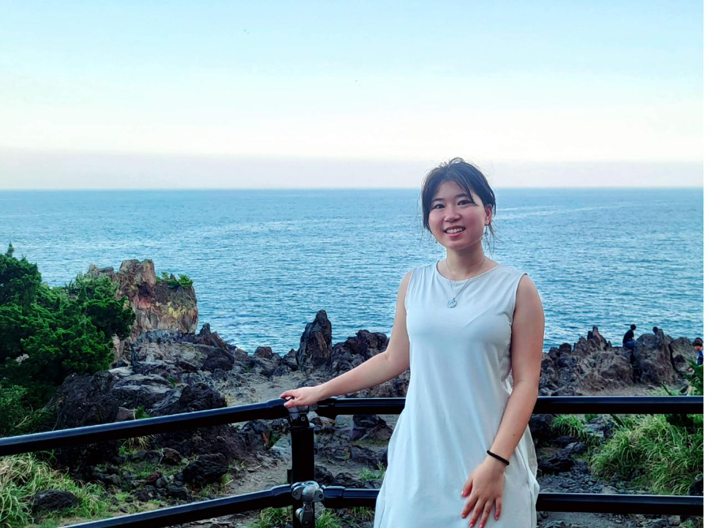

Designer's Passport
Allie He

Visa Stamps — Experiences
The best products welcome you in. Every product tells a story, and I believe that story should make whoever's using it feel like they belong there, made with them in mind, not just made for a user.
I graduated from NJIT in 2026 with a degree in Human-Computer Interaction and a minor in Digital Business and Innovation. My roots are in graphic design and editorial work. Years of thinking about how a layout communicates before a single word is read, how color sets a mood, how hierarchy guides someone without them noticing. From there, I picked up programming, marketing, and business strategy, and developed a deep interest in psychology. It means I can sit in a room with engineers, marketers, stakeholders, and researchers and speak each of their languages.
I've worked across enterprise analytics, consumer apps, brand launches, and editorial media as a designer, researcher, and analyst: from capacity-planning dashboards to a retro exploration device that won second place at a national design jam. I think in systems, and I love making complex information feel human. Which is probably why data-heavy products keep finding their way into my portfolio.
What I care about most is making things feel welcoming, turning something complicated into something intuitive. Outside of work, I make indie games with my sister, music, and art. It keeps me thinking about interaction, story, and the tiny decisions that make a world feel alive. Those instincts translate really well to products too.
Feb 2026 – May 2026
UX Engineer · UPS
Frontend UI/UX on an enterprise capacity analytics platform. Blazor/.NET, 5-sprint Agile cycle, 1,100+ sites.
Aug–Dec 2025
Study Abroad · Tokyo International University
Digital Business and Innovation. Lived in Japan for a semester. Still think about the food constantly.
Jun–Aug 2025
Customer Experience Intern · Allied Beverage Group
Three CX projects: Diver Dashboard, Salesforce scorecard for 1,000+ accounts, brand launch research supporting $1M+ product.
Aug 2023 – Jun 2025
UX/UI Mentee · Avanade NextGen Scholars
Mentored by Maggie Smith at Avanade. Placed finalist at international conference against 750+ participants.
Sept 2023 – Feb 2024
User Research Assistant · NJIT Social X Lab
Mixed-methods UX research on Roblox avatar customization — interviews, thematic coding, and a usability study with SUS/NPS scales analyzed in SPSS.
Nov 2022 – Mar 2023
Web, UX/UI & Graphic Developer · Barat Foundation
Rebuilt the nonprofit's website and designed a cohesive brand identity system — improving navigation, accessibility, and brand consistency across web, print, and digital platforms.
Sept 2023 – May 2025
Executive Design Editor · NJIT Vector Newspaper
Managed design team, produced bi-weekly print issues, increased readership 21%. Adobe InDesign/Illustrator.
Sept 2022 – May 2026
BS Human-Computer Interaction · New Jersey Institute of Technology
SIGCHI member. Coursework includes Designing the User Experience, Qualitative and Quantitative Research Methods, and more.